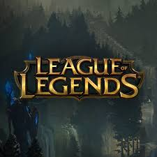

원래 룬테라라는 가상의 행성에서 살고 있는 수많은 챔피언들이 소환사(유저)의 인도로 정의의 전장에서 게임을 한다는 것이 기본 설정이었다. 그들이 발로란의 각 국가간의 전쟁과 그 전쟁으로 대륙이 황폐해지는 것을 막기 위해 전쟁 학회와 리그 오브 레전드를 창설했으며, 유저가 플레이하고 있는 모든 게임은 리그에서 수시로 행해지는 훈련 겸 친선전이라는 내용. 이것은 도무지 싸울 이유가 없었던 챔피언들이 피터지게 싸우는, 죽지 않고 되살아나는, 설정보다 약한 모습을 보여주는 이유 등을 잘 설명할 수 있는 호평받는 설정이었다. 그러나 챔피언들이 점점 늘어나면서 챔피언들이 리그에 참전한다는 이유가 불명확해지는 등 설정을 짜기가 힘들어졌고, 결국 소환사 설정과 정의의 저널 등 소환사에 관련된 설정을 전면 폐기하면서 엄청난 양의 설정 변경이 생겼고, 초기의 기초적 설정들 거의 대다수가 사장되고 말았다. 이전 설정을 보고싶으면 아래 설정 항목을 참조
